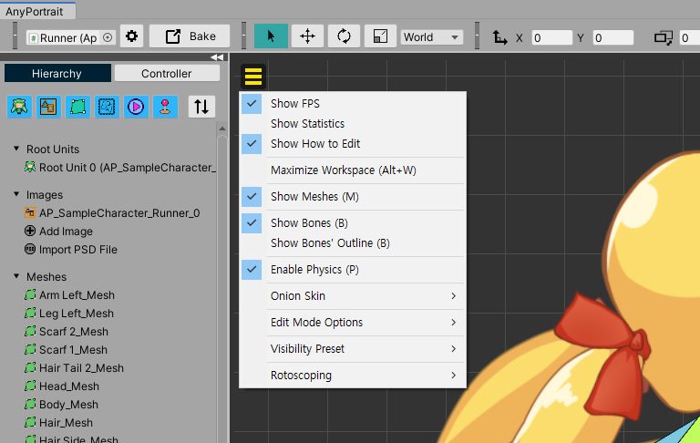

AnyPortrait > マニュアル > 表示メニューと状態アイコン
表示メニューと状態アイコン
1.3.4

「AnyPortrait v1.3.0」に追加された「表示メニュー」には、ワークスペース内のオブジェクトや他の要素をどのように出力するかを制御する機能があります。
このページでは、「表示メニュー」にどのような機能があるのか簡単に説明し、新たに追加された状態アイコンにも説明をします。
表示メニュー

ワークスペースの左上にメニューボタンがあります。
このボタンを押すと、「表示メニュー」を開きます。

「表示メニュー」です。
ワークスペースに関連する様々なアイテムがあり、ショートカットがある場合のように表示されます。
現在選択したオブジェクトの種類に応じて、いくつかのメニューが表示されない場合があります。
一部の機能は、トグル方式なので、有効にした状態で、もう一度押すと無効になります。
1. Show FPS, Show Statistics, Show How to Edit : ワークスペースにエディタやオブジェクトに関連した情報を出力します。
2. Maximize Workspace : ワークスペースを最大化します。
3. Invert Background Color : ワークスペースの背景色を反転します。
4. Show Meshes : メッシュがワークスペースに表示されます。
5. Show Bones, Show Bones' Outline : ボーンがワークスペースに表示されます。アウトラインだけ見えるように設定することができます。
6. Enable Physics : 「物理材質」と「ジグルボーン」が動作します。
7. Onion Skin : 「Onion Skin」に関するメニューです。 （関連ページ）
8. Edit Mode Option : 「編集モードのオプション」に関連するメニューです。 （関連ページ）
9. Visibility Preset : 「可視性プリセット」に関するメニューです。 （関連ページ）
10. Rotoscoping : 「ロトスコーピング」に関するメニューです。 （関連ページ）
11. Guidelines : 「ガイド」に関するメニューです。 (関連ページ)

表示メニューの一部の機能について説明しています。
(1) Show FPSをオンにすると、現在エディタの実行性能を示す「FPS（Frames per Second）」が出力されます。
(2) Show Statisticsをオンにすると、選択した対象の主要なデータが表示されます。
(3) Show How to Editをオンにすると、基本的なギズモを使用していない作業画面でどのように入力すべきかについての説明が短時間表示されます。
その他の機能については、関連するページを参照してください。
状態アイコン

(1) AnyPortrait v1.3.0に追加された「状態アイコン」になります。
(2) 現在のワークスペースでどのようにオブジェクトが出力され、編集されるかのステータスがアイコンの形で表示されます。
(3) アイコンにマウスを合わせると、その状態のツールチップが表示されます。ショートカットがある場合のように表示されます。

「状態アイコン」です。
アイコンは、「オブジェクトの出力方式」と「編集モード」のためのもので構成されます。
左のアイコンは、「オブジェクトの出力方式」の情報を意味します。
アイコンの中には、デフォルトの状態では表示されず、特別な場合にのみ表示されます。
(1) ラップトップユーザーのための「発熱防止用CPU最適化機能」がオンになっている場合表示されます。この機能は、設定ダイアログで起動できます。
(2) Show Meshesをオフにして、メッシュが出力されない場合に表示されるアイコンです。
(3) Show Bonesをオフにしたり、アウトラインのみ出力されるように設定すると、表示されるアイコンです。それぞれ「ボーンが見えていない状態」と「ボーンのアウトラインだけ見える状態」を意味します。
(4) Enable Physicsをオフにして物理的な効果が動作しないときに表示されるアイコンです。
(5) Onion Skinがオンの状態の時に表示されるアイコンです。
(6) 可視性プリセットがオンの状態の時に表示されるアイコンです。
(7) ロトスコーピング（Rotoscoping）がオンの状態の時に表示されるアイコンです。
右のアイコンは、編集モードでの状態を意味します。
詳細については、関連ページを参照してください。
(8) 「結果のプレビュー」の状態です。それぞれ「ボーンと色のプレビュー」、「ボーンプレビュー」、「色のプレビュー」を意味します。
(9) 「選択されたモディファイヤのみ動作」か、または「他のモディファイヤも同じように動作"するかのアイコンです。
(10) 「選択ロック」の状態です。それぞれ「別のオブジェクトを選択不可」、「他のオブジェクトを選択可能"、"モディファイヤに含まれているオブジェクトだけを選択可能」を意味します。
ワークスペースの背景色反転
1.3.4

画像が暗い色で描かれた場合には、ワークスペースの背景と画像を区別することは困難です。
特にメッシュを作成するときに、これらの困難は大きく感じられます。
ワークスペースの色を反転して、これらの問題を解決することができます。
(1) 「ワークスペース」と区別するのは難しいイメージです。画像のエッジが鮮明に区別されません。
(2) 「表示メニュー」を開きます。
(3) 「Invert Background Color（ショートカット Alt+ I ）」オプションをオンにしてみましょう。

ワークスペースの背景が明るい色に変わりました。
これで、画像のエッジを簡単に区別できるようになりました。
（元の色に戻るには、表示メニューからこのオプションをオフにしたり、再 Alt+ I を押してください。）

反転された背景色を「設定ダイアログ」で変更できます。